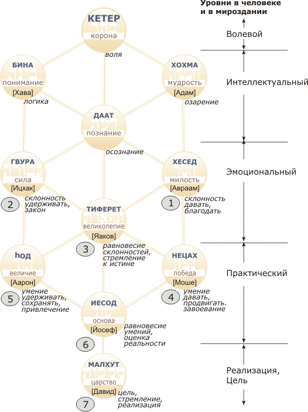

Пинхас
Полонский
Проблемы Государства Израиль в свете Каббалы
Попытка анализа на основании понятий
Каббалы сегодняшних проблем Государства Израиль
и путей его дальнейшего развития.
1. Страна
на выдохе
2.
Неспособность религиозных построить Государство
3.
Неспособность нерелигиозных удержать Государство
4.
Конфликт между светскостью и религиозностью должен смениться их синтезом
5.
Йосеф и Давид как соотношение Йесод и Малхут
6.
Кризис Израиля сегодня как отрыв "йесод" от "малхут"
7.
Бесцельность порождает усталость
8. Не
отрывать плод от дерева
1. Страна на выдохе
Государство Израиль вступило сегодня, наверное, в самый сильный внутренний кризис с момента его создания. Внешне это выражается в разрушении поселений и изгнании их жителей – т.е. в отказе Государства от идеи продолжения освоения Страны. Внутренне этот конфликт представляется как столкновение между Государством и движением религиозного сионизма. "Вязаные кипы", которые, казалось бы, все прошедшие полвека находились с Государством в каком-то виде, если не симбиоза, то, по крайней мере, активного сотрудничества – оказались вдруг по противоположную сторону баррикады.
Подрывает ли сегодняшнее противостояние всю идеологию религиозного сионизма, доказывает ли оно якобы его «ошибочность»? Или, может быть, «выдох» Государства является нормально фазой его функционирования, и он ведет не к смерти, а лишь к следующему «вдоху»?
И вообще - что же сам религиозный сионизм, а не его критики, говорят о сегодняшнем кризисе? Главная проблема здесь, конечно, состоит в том, как может Государство Израиль, которое вроде бы, согласно концепции р. Кука, должно являться началом мессианского процесса, - как оно может вести такую совершенно омерзительную политику, выгонять евреев из их домов, отдавать территории Страны террористам, и т.д.? Как случилось, что само Государство предало сионизм? И как же после этого оно может быть началом мессианского процесса?
Именно этот вопрос мы обсудим ниже.
2. Неспособность религиозных построить Государство
Концепция р. Кука – религиозный сионизм - базируется на каббалистическом различении двух видов святости: "святости галутного вида", при которой Шехина находится в состоянии изгнания (и, в том числе, в состоянии "Изгнания из Природы"), и "святости Эрец-Исраэльного вида, имеющей место в Стране Израиля".
Обсуждая вопрос о том, почему Государство Израиль, оно же - "начало мессианского процесса", - строится нерелигиозными людьми, рав Кук объясняет, что галутное еврейство, галутная святость, галутная ешива и галутная религия вообще, по самому своему устройству, не были в состоянии построить Государство. Этому есть много исторически-локальных причин (идеологическая установка, отсутствие широкого университетского образования, интегрированность в галутную жизнь и многое другое, которое без проблем перечислит любой историк); но главная, глобальная причина, как объясняет р.Кук, состоит в ином – в том, что «святость галута» по самой своей сути противопоставлена природе, естественной светской жизни, съежена в "четыре локтя галахи". Когда евреи ушли в двухтысячелетний галут, то нужно было сохраниться, а чтобы сохраниться, пришлось обрубать все живые ветки, прорастающие в мирскую, светскую жизнь, чтобы остаться в виде как бы «высохших спор». Конечно, в виде спор можно сохраняться долгими годами, но для этого нужно было "высушиться", обрубить все естественные связи, прекратить "обмен веществ" (в духовной области) с окружающей средой. Разумеется, "физически" общение с миром продолжалось, евреи учились и ремеслам, и торговле, но духовная установка была на отделение, на изоляцию, на сохранение. Святость галута провозглашала: сиди в ешиве, посвяти себя традиции, и не вкладывай свою душу в вовлеченность в окружающую жизнь, в занятие экономикой, политикой, наукой, искусством, литературой и т.д. Конечно, такой установке способствовало и давление окружающего мира, не пускавшего евреев во многие области жизни, но и сам иудаизм тоже провозглашал изоляционистский подход "духовного гетто", объявляя его правильным путем к святости. Такая установка называлась: «У Всевышнего в изгнании нет ничего, кроме четырёх локтей Галахи» («четыре локтя» - это классическая мера в галахе, и она здесь служит символом галахи в целом). Это знаменитое высказывание описывает суть галутной святости: Божественное присутствие, «Шехина», ушло в изгнание вместе с евреями, и это не только изгнание из Страны, но и изгнание из естественной жизни. Для выживания в Изгнании было необходимо так построить общественное сознание, чтобы сильные личности, таланты, гении - ориентировались бы на усилия по сохранению традиций; а если бы еврейство было открыто миру, то эти сильные личности ушли бы в самые разные области деятельности окружающей жизни, потому что для сильного человека самой главной приманкой является возможность и полнота самореализации, несомненно, более разносторонней в "большой широкой жизни". Для того чтобы сохранить этих людей, надо было выстроить такую систему приоритетов, при которой изучение Торы, а не исправление окружающего мира, является главной религиозной ценностью. Этот идеал, провозглашенный в Мишне (во 2 в. н.э., на пороге Изгнания) совершенно не соответствует ТаНаХу, для которого идеал – это построение правильной еврейской национальной жизни в стране Израиля, построение правильного еврейского государства на своей земле. Несомненно, что для того, чтобы построить правильное государство, нельзя обойтись без изучения Торы; но только одного изучения Торы для этого совершенно недостаточно, нужны еще и наука, и техника, и искусство, необходимы как университет, так и художественная академия. В галутном же иудаизме университет и художественная академия были отодвинуты в сторону - потому что такой "обмен веществ" с окружающей средой, жизнь «живой клетки» - не дал бы возможность столь долго сохраняться, и пришлось высушить "живую клетку" и превратиться в "споры". А поскольку, как всегда, наши недостатки есть продолжение наших же достоинств, - то галутная святость, необходимая для выживания в Диаспоре, была совершенно неспособна на то, чтобы построить Государство. (Хотите убедиться в этом? Посмотрите на учеников харедимной иешивы. Они что, в состоянии поднять такой гигантский проект, который называется Государством? Да ни в жисть...)
Более того: хотя даже и сам сионизм появился сначала как религиозное течение, ибо сионистскую идею первым выдвинул совсем не Герцель (в 1897 г.), а рав Калишер (в 1860 г., т.е. за 40 лет до Герцеля), который надеялся, что именно религиозные люди поедут в Святую Землю и будут строить Страну, - но почти никто не откликнулся на его призыв; и только сильно впоследствии, уже под влиянием погромов - с одной стороны, и жажды построения справедливого социалистического общества - с другой, в Стране Израиля смогла собраться необходимая для государства еврейская масса, но это уже было нерелигиозное еврейство. Таким образом, сионизм из первоначально-религиозного превратился в чисто "светское" движение - именно потому, что религиозное общество оказалось не в состоянии такой гигантский проект поднять.
Рав Кук, впрочем, говорил об этом уже в 1904 г. Он объяснял, что для того, чтобы построить государство «с нуля», этим следует самоотверженно заниматься много десятков лет, надо забыть всё остальное и посвятить этой идее все физические и духовные силы. А религиозные ученики галутной иешивы, центр жизни которых есть изучение Торы, - они в массе своей не могут так перестроиться, чтобы посвятить жизнь построению государства. Поэтому, говорит рав Кук, исторически для создания Государства Израиль было совершенно необходимо, чтобы возникла новая формация – "нерелигиозные евреи". И действительно, в течение 19 века, многие евреи отошли от иудаизма, ибо их привлекал современный мир, современная наука, культура и т.д.; однако, без иудаизма в их душах осталась экзистенциальная пустота, и поэтому ищущие, сильные, духовно мотивированные пассионарные личности (в Каббале они называются "Души мира Хаоса") не имели теперь Проекта, куда бы можно было себя вложить; и именно они приложили свои силы к созданию Государства. Т.е. в историческом масштабе, парадоксальным образом было необходимо «освободить» некоторую значительную часть народа от религиозной установки, чтобы они могли со всем самопожертвованием вложиться в другую установку, в Государство - иначе государство не могло бы быть создано.
3. Неспособность нерелигиозных удержать Государство
Однако, продолжает рав Кук (в своих дневниках 1904 г.!), хотя нерелигиозные евреи могут построить Государство, они будут не в состоянии удержать его. Это подобно тому, как например, штангист, который может сделать рывок и поднять тяжелый вес, не может продолжать стоять с этим весом, не может удерживать его длительное время: для этого нужны совсем другие силы. Для того чтобы построить, нужен рывок, нужен протест, нужно сильнейшее чувство невыносимости еврейской жизни в Галуте (и, кстати, поскольку первопроходцам сионизма был невыносим галут, то многие из них автоматически перенесли это также и на галутный иудаизм: им стали невыносимы галутная ешива и галутное изучение Торы, т.к. весь этот иудаизм был, в их глазах, неотъемлемой частью Галута). Именно эта протестная "энергия отрицания галута", помноженная на погромы и на Катастрофу, дали силы создать Государство.
Однако на этом протестном неприятии галута можно было построить Государство Израиль, но на этом нельзя это Государство удержать. Протест - это такое чувство, которое долго не протянет. Оно держится – ну, два (дети еще могут воспринять эмоциональную установку взрослых), ну, где-то, в лучшем случае, три поколения. Далее эта энергия полностью распадается. Когда «накал отрицания галута» спадает, то светский сионизм третьего поколения обнаруживает отсутствие фундамента, он не может дать никакого (кроме того, что "в галуте была Катастрофа") объяснения тому, в чем смысл существования Государства Израиль, и почему надо продолжать вкладывать в него силы и рисковать жизнью. (И действительно: кто у нас из "светских" является сионистом? Только олим...) В связи с этим, нерелигиозное еврейство не сможет это государство удержать.
Мы отмечали выше, что святость в галуте есть святость такого вида, которая противопоставлена природе, и что именно такой подход к святости дал еврейскому народу возможность сохраниться; для того же, чтобы построить Страну, нужно быть не противопоставленным природе, а быть сообразным природе, соприродным науке, естественности, спорту, культуре, политике и всем другим "будничным" светским вещам. Поэтому в начальный период построения государства необходимо торжество "светскости" и природности, и они отбрасывают святость, "галутную святость", потому что она "анти-природна". Но природность при этом не осознает, что, когда она отбрасывает ту самую святость, которая вроде бы мешала ей развиваться, то она при этом также и подрубает корень питания самой себя, ибо есть еще и "внутри-природная" святость, и сама сила жизни "природности" подпитывается из неё. Когда же отбрасыванием святости всё это было обрублено, то происходит "самозасыхание" природности. И именно этот механизм приводит к исчерпанию ресурса сионизма у нерелигиозного еврейства.
Рав Кук говорит об этом так: из каббалы мы понимаем, что отказ от духовности и от святости, который проявляется у первых сионистов, приведет к тому, что через некоторое время потомки этих первых сионистов начнут совершенно отказываться также и от сионизма, от его идеалистичности и самопожертвования, и захотят просто жить спокойной, тихой, материальной жизнью. И тогда построенное ими Государство окажется перед угрозой распада. Однако за это время в Стране Израиля будет "выведен" новый вид религиозности, новый вид святости, который будет святостью Страны. Этот новый вид святости, в отличие от святости галутной, с самого начала будет не противопоставлен природности, а интегрирован с нею. Поэтому такие вопросы, как построение государства, экономики, сельского хозяйства, спорта, армии и всего прочего будут естественно входить в его религиозную сферу. Для произрастания этого нового вида святости нужна еврейская жизнь в Стране Израиля, т.е. Государство, пусть даже и совершенно нерелигиозное, ибо оно послужит как бы временной «теплицей» для этого выращивания; и без неё невозможно этот вид святости вырастить; в галуте он не произрастает. А к тому времени, как нерелигиозный сионизм, к сожалению, состарится и одряхлеет, - этот новый вид сионизма, религиозный, станет достаточно взрослым и он сможет перенять у нерелигиозного сионизма управление Государством.
4. Конфликт между светскостью и религиозностью должен смениться их синтезом
Все это отнюдь не означает, что «светские» будут не нужны, что они якобы лишь «осел Машиаха» и т.п. Ничего подобного! Наоборот: без светских евреев движение не сможет продолжаться.
Религиозный сионизм должен являться синтезом идеалов израильского нерелигиозного еврейства - полнота жизни, природы, науки, искусства и социума, гражданская ответственность за будущее народа, свобода, примат совести; с идеалами прежнего галутного религиозного еврейства (Божественность Торы, жизнь, осознаваемая как Завет с Богом, духовная важность традиции, избранность еврейства для спасения человечества). (Мы здесь за неимением места оставляем в стороне вопрос о религиозной важности и ценности «неверия» и «атеизма», но и они не должны пропасть!)
Именно поэтому рав Кук, поддерживая светский сионизм, главнейшим своим делом считал создание нового вида иешивы, в которой сможет вырасти эта Эрец-Исраэльная религиозность.. На сегодняшний день, через 85 лет после основания иешивы "Мерказ hа-Рав", мы видим, что этот подход оказался верным и плодотворным, ибо все «вязаные кипы», и вся замечательная оранжевая молодежь, которая есть в нашей Стране, выросли из ешивы рава Кука и из производных от нее иешив, в которых развивался подход "святости, соприродной Стране Израиля". Без ешивы рава Кука и его идей – поселенческое, а за ним и «оранжевое» движение вообще не могли бы возникнуть. И когда у нерелигиозного сионизма наступил кризис, и Государство Израиль начало отказываться от идей сионизма (что мы наблюдаем сегодня), то уже видно то новое религиозно-сионистское поколение, которое через 10-15 лет будет в состоянии взять на себя ответственность за Государство.
Более того: поскольку необходимо сменить всю парадигму государства, то прежнее устройство государства, весь его истеблишмент обязательно должны прогнить. К сожалению, это вполне естественный процесс, необходимый для перехода к следующей фазе. Несомненно, что сейчас вся государственная система Израиля ведет себя мерзко и отвратно, но так и должно, по идее, происходить – может быть, для того, чтобы наши дети прониклись отвращением ко всей нынешней форме государства и пониманием необходимости ее замены.
И все это совершенно нормальный исторический процесс, вовсе не свидетельствующий о том, что религиозные сионисты якобы ошиблись, когда они сто лет назад посчитали строящееся Государство Израиль началом мессианского процесса. Напротив - тогда это было совершенно правильным; и более того, Государство Израиль даже и сегодня продолжает быть началом мессианского процесса, просто мессианский процесс переходит от одного архетипа Машиаха, от Машиаха бен Йосефа, - к другому, Машиаху бен Давиду. Машиах бен Йосеф гниет и умирает у нас на глазах, и его агония – это "процесс Осло", но об этом – беря пример с царя Давида! - нужно сокрушаться, а не злорадствовать.
5. Йосеф и Давид как соотношение Йесод и Малхут
Как известно, одна из центральных идей Каббалы состоит в том, что универсальная структура «Десяти сфирот» проецируется на все уровни жизни – на порядок и структуру Сотворения мира, на праотцов и создателей еврейского народа, на устройство души человека, на структуру еврейского национального общества и т.д. То есть структура сфирот проявляется повсюду, и выявление этой общей структуры помогает нам увидеть единство мироздания, что является одной из важнейших вещей в Каббале (как и во всякой мистике).

Устройство структуры начинается с Кетер (изначальная воля) и завершается Малхут (реализация этого начального волевого импульса). Правая (экстравертная, мужская), левая (интравертная, женская) и средняя (гармонизирующая) линии представлены на верхнем уровне (разум) категориями Хохма, Бина и Даат; на среднем уровне (эмоция) категориями Хесед, Гвура и Тиферет, и на еще более приземленном (практическом) уровне категориями Нецах, hод и Йесод.
Рассмотрим в качестве иллюстрации проекцию семи нижних сфирот на Семь дней Творения.
В первый день – (Хесед, "распространение") - Бог создал свет, а в четвёртый день – (Нецах, победа, "усиленное распространение") – Бог сделал светила, что представляет собой наполнение, усиление первого дня. Во второй день – (Гвура, "удерживание") - создан небосвод, который держит воду и "отделяет воду от воды", а в пятый день (hод, «объединяющее, сдерживающее великолепие») - созданы земноводные и птицы, которые наполняют воду и небо второго дня. В третий день (Тиферет, «равновесие желаний распространения и удерживания») создана суша, находящаяся в равновесии с морем; а в шестой день (Йесод, "равновесие в прагматике, оценке реальности, возможностей победы и сдерживания") созданы человек и животные, населяющие эту сушу. И соответственно, седьмой день – это Суббота, являющаяся целью Творения, определяющая вектор всего мирового устремления. Она воплощает цель, смысл всей этой структуры и поэтому у нее нет уже самостоятельного действия, ее характеристика - это "субботний покой". Параллельно этому, семь нижних сфирот соотносятся с семью "создателями еврейского народа": Авраам (1) - это Хесед (распространение монотеистической веры), Ицхак (2) – Гвура (удержание традиции), Яаков (3) – Тиферет (истина в равновесии хеседа и Гвуры), Моше (4) – Нецах (победа, "усиленное распространение" Торы, принятие ее еврейским народом), Аарон (5) – hод (великолепие Храма, соединяющее все части народа, удерживающее его единство), Йосеф (6) – Йесод (управление материей, соотнесение с реальностью) и Давид(7) – Малхут, царство.
Все это соответствие, конечно, хорошо всем известно, и было сказано здесь только для разминки, как вводные слова; я же сейчас хочу обратить ваше внимание на один важный и нетривиальный момент этой схемы (который долгое время и мне самому не был понятен). А именно, в соотношении "создателей народа" с семью нижними сфирот есть одна хронологическая нестыковка: почему Йосеф (6) идёт позже Моисея (4) и Аарона (5)? Ведь хронологически Йосеф, сын праотца Яакова, жил существенно раньше Моисея и Аарона (относительно всех прочих персонажей их место на "дереве сфирот", соответствует хронологии). И дело здесь, видимо, в том, что дерево сфирот представляет нам не только структуру создания еврейского народа, но также и базовую хронологию человечества от Сотворения и до Мессианского завершения. А именно, Кетер (Воля) – это исходная Божественная воля по сотворению мира, и это начальный "запуск" мироздания в преддверии первого дня творения; дальше Адам и Хава, соответствующие сфирот Хохма и Бина (подробнее о соответствии Хохма и Бина мужчине и женщине см. в книге «Две истории Сотворения Мира», гл.6 ) - это Шестой день творения, создание человека и человечества; следующий уровень Хесед, Гвура и Тиферет – это праотцы, представляющие еврейский народ на семейном уровне; далее – Моше и Аарон, - это исход из Египта, дарование Торы на Синае, создание еврейского народа как социума. А завершают эту структуру Йосеф и Давид, которые выступают здесь не как персональные сын Яакова и автор Псалмов, а как символы Машиаха бен Йосефа и Машиаха бен Давида. Поэтому Йосеф как сфира и должен идти позже Моисея и Аарона, т.к. здесь имеется в виду не личность самого Йосефа, а "предваряющая" мессианская категория, которую он собой представляет. Иными словами, здесь есть развёртка по сфирот всей истории человечества, от его создания до завершающей цели, в ее основных поворотных точках и ключевых моментах.
6. Кризис Израиля сегодня как отрыв "йесод" от "малхут"
Возвращаясь к сегодняшним проблемам, мы отмечаем, что уже много раз обсуждалось, что нынешнее Государство Израиль воплощает собой категорию "Машиах бен Йосеф" (см. например, статью «На переломе Еврейского Государства»), а борьба израильского истеблишмента против поселенческого движения есть борьба Царя Саула против будущего царя Давида. Таким образом, соотношение Йесод и Малхут, т.е. Машиаха бен Йосефа с Машиахом бен Давидом и их динамика, - описывает то, что происходит у нас в Стране сегодня.
Главная проблема с Йосефом (он же категория Йесод) в том, что он, по рассказу Торы, является довольно сложным и даже амбивалентным персонажем. Несомненно, что продажа Йосефа была огромным грехом со стороны братьев, - но нельзя забывать того, что и сам Йосеф немало провоцировал их на это. Йосеф, конечно, необычайно талантлив, он гений в управлении материальным миром, - но он предстает очень проблемным, когда верхней границей его мечтаний становится лишь собственное царство над братьями. Эта проблемность Йосефа нашла свое выражение во многих событиях еврейской истории: и тогда, когда Саул, для сохранения монополии на власть, преследовал Давида; и тогда, когда после смерти царя Соломона северные колена под руководством потомков Йосефа откололись и создали в Шомроне Северное царство с его установкой на "золотого тельца" (символ колена Йосефа); и тогда, когда Шомронский царь Ахав ради материального процветания и союза с Финикией легализует культ Ваала, которому поклоняется Изевель, его финикийская жена.
Йосеф необходим, без него еврейский народ не может реализоваться, но у него есть существенные проблемы. Йосеф – это сила преобразования материи; он очень многое может, он лучше многих других справляется с материальным миром. Это умение помогает ему, когда он попадает в дом Потифара, где он очень быстро становится главным управляющим; и далее, когда его бросают в тюрьму для "высших сановников государства" и он становится управляющим тюрьмы, и, наконец, когда фараон вытаскивает его на самый верх Египта, и он становится премьер-министром всего государства. Йосеф смог сохранить урожай, смог спасти Египет от голода и вымирания, а затем перестроить всю его экономическую и демографическую структуру. Эти же способности Йосефа послужили впоследствии основой экономической мощи Северного царства. Но если Йосеф начинает воспринимать свои "материальные" способности не как средство продвижения к царству Давида, а как самоцель, - то начинается деградация Йосефа.
Каббала формулирует эту ситуацию указанием на то, что главная проблема здесь – это отрыв «йесод» (Йосефа) от «малхут» (Давида). Сфира «йесод» (6) является интеграцией всех предыдущих стадий естественного развития (1-6). Поэтому на "дереве сфирот" все предыдущие связи сходятся к Йесод - это как бы квинтэссенция всего достигнутого ранее (и Шестой день Творения, человек, есть интеграл мироздания), но Малхут – это цель, ради которой все это мироздание необходимо. Когда мы сосредотачиваемся на достижениях, не имея цели, ради которой эти достижения делаются, - то это один из типичных примеров отрыва йесод от малхут. Этот разрыв состоит в том, что мы физически можем всего достичь, мы можем преобразовать окружающий мир, мы можем (в рамках нашего сегодняшнего политического обсуждения), создать государство на пустом месте - только мы не знаем, зачем, в конце концов, все это надо. Когда мы не понимаем и не ощущаем, в чем состоит высшая цель, - то мы теряем перспективу и смысл, а затем и все достижения, и вся созданная структура, Государство, - неизбежно начинает распадаться. Проявление сфирот от Хеседа (1) до Йесод (6) как единого целого (в Каббале такое единое проявление этих сфирот называется "парцуф зеир анпин") представляет мир в правильном техническом взаимодействии и соединении, внутреннем равновесии, в "реалистической" оценке окружающего мира и в прагматизме (что является также сугубо характеристическим именно для сфиры "Йесод"). Однако если отсутствует смысл, к которому все это устремлено; когда достигнуты все результаты, но отсутствует высшая цель - тогда начинается кризис, и это и есть главный кризис Йосефа. Йосеф умеет построить всё, что угодно, - но у него самого, взятого отдельно, отсутствует понимание цели, ради которой все это нужно. (Можно отметить такой небольшой, но интересный факт, что в Торе Йосеф всегда управляющий, но никогда не главный. Он прекрасно реализует любую цель, которую ему ни зададут; управляет домом Потифара, управляет тюрьмой, управляет Египтом и спасает его, - но задачу ему ставят извне, это делают его хозяин Потифар, начальник тюрьмы, фараон. Йосеф может выполнить любую задачу, но он не может правильно поставить цель, а без такой цели система неизбежно начинает распадаться. Лишь когда Йесод ориентирован на Малхут, который есть духовность и царство Давида (Машиах бен Давид), то осознаются смысл и цель, и система становится жизнеспособной. Если же эта связь между Йесод и Малхут разорвана, т.е., если Йосеф абсолютизирует себя и не видит перед собой высшей цели, - то он деградирует и распадается, и именно это и есть причина смерти Машиаха бен Йосефа, о которой говорит еврейская традиция. Именно это произошло с Саулом, который погиб, ибо разорвал свою связь с Давидом.
(Вообще-то, гибель Машиаха бен Йосефа совсем не обязательна, он может уцелеть, если поддержит Давида и захочет быть управляющим в его царстве, как это хотел сделать Йонатан, сын Саула. Более того, в таком случае на престоле, возможно, сидели бы даже потомки Шауля, т.к. дочь Шауля, Михаль, была замужем за Давидом. Но, разорвав связь с Давидом, Шауль обрек на смерть и уничтожение не только себя, но и свое потомство.)
Кстати, в проекции "дерева сфирот" на физическую структуру человека – а такая проекция тоже есть в Каббале («Иесод» - это «эвер», а «Малхут» - это «нуква») - разрыв между Йесод и Малхут соответствует онанизму, когда семя извергается впустую и рождение невозможно. И, в некотором смысле, Машиах бен Йосеф, когда он теряет перспективу связи с Машиахом бен Давидом, совершает "духовный онанизм", подтачивающий все силы его организма.
7. Бесцельность порождает усталость
Итак, главный выбор, перед которым стоит Машиах бен Йосеф (он же категория "Йесод", и он же сегодняшнее Государство Израиль) состоит в том, устанавливает ли он связь с Давидом, (он же Малхут, реализация цели) и через это получает перспективу, силу и смысл, - или же он разрывает эту связь, тогда он, соответственно, теряет цель и сам тоже разрушается. И ситуации, в которой находится сегодня Государство Израиль, является критичной потому, что собственные силы Машиаха бен Йосефа сейчас уже на исходе. Мы постоянно слышим, как нерелигиозные израильтяне говорят: «Мы устали! Мы устали воевать, устали бороться, устали быть идеалистами. Давайте отдадим врагам, что они хотят, хоть даже и Иерусалим – лишь бы жить тихо». (Единственная большая группа пока еще не совсем "уставших" нерелигиозных – это "русские", потому что срок их израильтянства пока невелик и протест против галутного существования пока еще силен.) Эта "усталость" означает, что те идеалы, которые вдохновляли нерелигиозный сионизм, на сегодня утратили свою энергию, умерли. Но сионисты религиозные, поселенцы – они-то не устали! И это не потому, что они возрастом помоложе, а потому, что они видят перспективу, в направлении которой можно продвигаться, видят смысл, ради которого стоит развивать Государство и продолжать осваивать Страну. "Вязаные кипы" в потенциале и есть категория Машиаха бен Давида, Государства-миссии, а не Государства-убежища. (И кстати, оранжевый цвет ленточек на их флаге – символ Давида, который был "адмони" – т.е. рыжим). Бесцельность порождает усталость, поэтому "Йесод" все более устает. Нерелигиозные избиратели жаждут только тишины и покоя (и это то единственное, что их лидеры им обещают), а поселенческая молодежь жаждет действия и строительства Страны, за что она и ненавистна правящему истеблишменту.
8. Не отрывать плод от дерева
Хотя Саул преследует Давида, тот не отвечает ему тем же, но наоборот, продолжает считать его Машиахом. Давид дает Саулу самому доиграть свою партию, и когда государство Саула рушится, то Давид не радуется смерти Саула, он скорбит о нем. При том, что Саул преследовал Давида, Давид не теряет историческую перспективу и продолжает считать Саула Машиахом, ибо только на фундаменте Саула может стоять царство Давида. (В терминах сфирот: Малхут должен осознавать, что он не может обойтись без Йесод, т.к. сам Малхут не может подсоединиться ко всей системе сфирот кроме как через Йесод. Дерево сфирот сходится к Йесоду и лишь оно дальше создает контакт с Малхут.) Понимание того, что для продвижения царства Давида нужно сначала иметь царство Саула, очень важно для нас сегодня. И когда Государство Израиль ведёт себя неправильно, мы все же должны осознавать, что только на базе этого государства возможно дальнейшее продвижение. Ведь невозможно не видеть тех гигантских плюсов, в том числе и для продвижения царства Давида, которые мы получили из-за создания нынешнего, пусть и несовершенного Государства. Без него мы не смогли бы ни приехать в Страну, ни построить поселения, ни воспитать религиозно-сионистскую молодежь. Все это важно продолжать осознавать.
И в этой связи хотелось бы упомянуть, что, как объясняет Зоhар, сутью греха Адама в Райском Саду (а тот грех был архетипом греха вообще) явилось не собственно съедание плода с Дерева познания Добра и Зла, а отрывание плода от Дерева, т.е. желание воспользоваться плодами без желания воспринять всё Дерево в целом. И поскольку это и есть архетип всякого греха, то грех состоит в том, что желают пользоваться результатами, плодами, без желания воспринимать все дерево, всю основу, на которой базируются эти результаты. (Пример такого подхода, встречающийся иногда в некоторых религиозных кругах: использовать достижения науки можно, потому что с ее помощью мы можем лучше праздновать шабат или соблюдать другие заповеди, но заниматься самой наукой не следует, ибо это только лишь отрывание времени от изучения Торы. Или еще более вопиющий пример: «Государство Израиль нам помогает, спасибо, что оно нам дает, например, хоть и небольшой, но прожиточный минимум, и мы поэтому можем сидеть в ешиве; но само это Государство Израиль никому не нужно» и т.д.) В таком отрывании плодов от дерева есть глубокая внутренняя аморальность, и все прекрасно её чувствуют, и именно ее подчеркивает Зоhар. (И эта аморальность больше, чем что-либо другое, подрывает статус иудаизма в Израиле, потому что, когда нерелигиозные люди видят, что религиозный мир готов пользоваться плодами Государства и не готов в него вкладывать, т.е., желая есть плоды, не готов участвовать в «поливании дерева» - то такой иудаизм не имеет никаких шансов на то, чтобы быть принятым.)
Очень важно, чтобы Машиах бен Давид не делал сегодня подобных ошибок. Нужно понимать, что да, Государство (или, точнее, истеблишмент) совершает сегодня не только ошибки, но даже и преступления, и их, конечно, надо будет потом исправлять, однако из-за этого нынешняя форма Государства всё равно не теряет свой статус "начала мессианского процесса". К сожалению, мы являемся свидетелями агонии Машиаха бен Йосефа, но из-за этого не надо в него плеваться. Нужно понимать, что есть формы, которые отмирают, и приходят другие формы, но прежние формы нужно благодарить (хотя и критиковать), а не оплёвывать.
***
Нынешнее Государство Израиль сдается и будет сдаваться арабам до момента, пока оно не будет окончательно подорвано и разрушено. К сожалению, царство Давида строится на развалинах Государства Саула - не потому, что мы хотим ему зла, а потому, что из-за выбранного этим государством пути, оно разрушает себя само.
Хотя все это весьма печально, но именно оно (и в древности, и сегодня) обеспечивает переход людей Саула на сторону Давида.